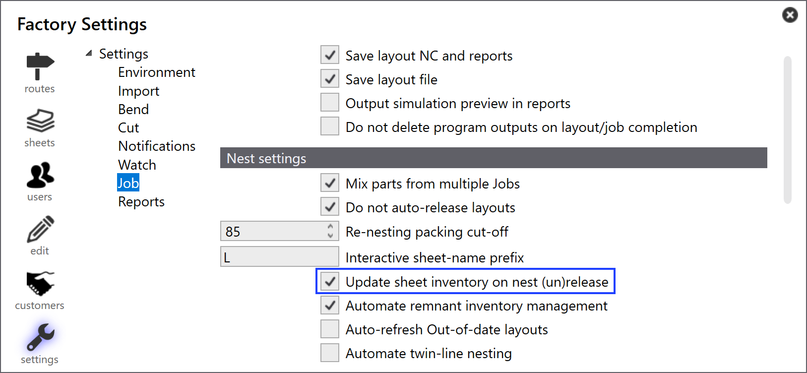
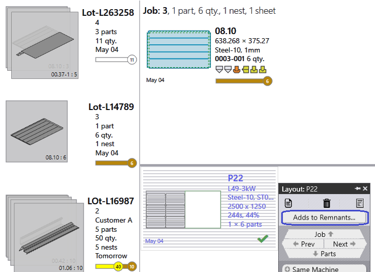
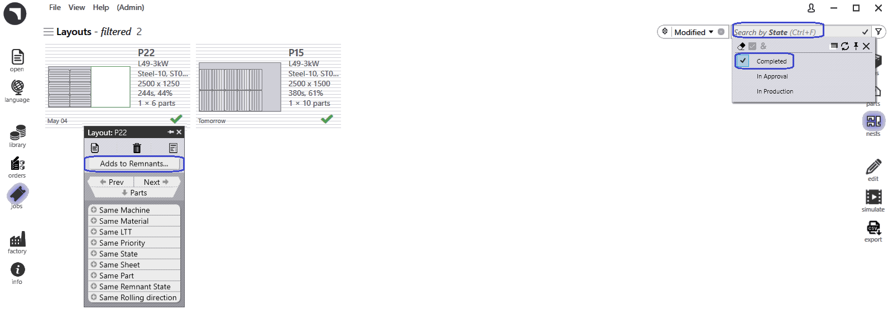
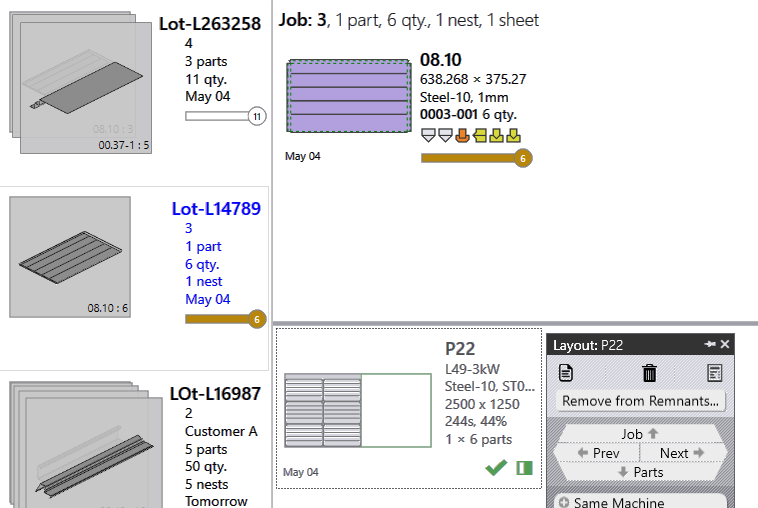

Gestione lamiere residue manuali
Configura residui manuali
-
Fare clic su factory → Settings → Job. Selezionare solo Update sheet inventory on nest (un)release.

Lamiera residua manuale dal JOB
-
Contrassegnare il layout completo contrassegnato con la spunta verde; fare clic con il tasto destro del mouse e fare clic su Adds to Remnants.
-
Così la lamiera residua viene aggiunta manualmente alla banca dati lamiere.

Lamiera residua manuale dal nesting del JOB
-
Passare a JOB → pagina Nesting. Usare Filters e selezionare State.
-
Prelievo completato, che mostra tutti i layout completati.
-
-
Fare clic con il tasto destro del mouse sul layout per cui occorre creare un residuo manuale e fare clic Fare clic su Adds to Remnants

Rimuovi residui
-
Nel caso in cui la lamiera residua sia danneggiata o persa, invece di eliminare la lamiera residua dalla giacenze lamiere, per i soli residui creati manualmente, fare clic con il tasto destro del mouse e fare clic su Remove from Remnants
-
Questa operazione elimina la lamiera residua dalle giacenze lamiere; inoltre notifica "Icona del quadrato parzialmente ombreggiato per visualizzare la lamiera residua creata".
-

| Le lamiere residue (create automaticamente/manualmente) sono selezionate con alta priorità durante il piano di nesting automatico o interattivo. |